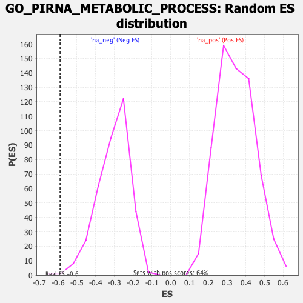

| | | Dataset | Recurrence |
| Phenotype | NoPhenotypeAvailable |
| Upregulated in class | na_neg |
| GeneSet | GO_PIRNA_METABOLIC_PROCESS |
| Enrichment Score (ES) | -0.5883458 |
| Normalized Enrichment Score (NES) | -1.926768 |
| Nominal p-value | 0.0027855153 |
| FDR q-value | 0.20118389 |
| FWER p-Value | 0.893 |
Table: GSEA Results Summary
 Fig 1: Enrichment plot: GO_PIRNA_METABOLIC_PROCESS
Fig 1: Enrichment plot: GO_PIRNA_METABOLIC_PROCESS
Profile of the Running ES Score & Positions of GeneSet Members on the Rank Ordered List
| SYMBOL | RANK IN GENE LIST | RANK METRIC SCORE | RUNNING ES | CORE ENRICHMENT | | 1 | HENMT1 | 2447 | 1.162 | -0.0470 | No |
| 2 | TDRD9 | 5012 | 0.722 | -0.1297 | No |
| 3 | GPAT2 | 5137 | 0.706 | -0.0884 | No |
| 4 | MOV10L1 | 7643 | 0.394 | -0.1902 | No |
| 5 | PIWIL4 | 8137 | 0.338 | -0.1927 | No |
| 6 | PIWIL1 | 9756 | 0.165 | -0.2645 | No |
| 7 | MYBL1 | 10636 | 0.069 | -0.3049 | No |
| 8 | FKBP6 | 12243 | -0.117 | -0.3793 | No |
| 9 | EXD1 | 12818 | -0.186 | -0.3962 | No |
| 10 | PLD6 | 14756 | -0.441 | -0.4657 | No |
| 11 | ASZ1 | 15653 | -0.580 | -0.4725 | No |
| 12 | PIWIL2 | 17914 | -1.051 | -0.5174 | Yes |
| 13 | TDRD1 | 17929 | -1.056 | -0.4469 | Yes |
| 14 | BTBD18 | 18365 | -1.199 | -0.3883 | Yes |
| 15 | TDRKH | 18949 | -1.505 | -0.3166 | Yes |
| 16 | MAEL | 19011 | -1.542 | -0.2157 | Yes |
| 17 | TDRD12 | 19251 | -1.782 | -0.1077 | Yes |
| 18 | DDX4 | 19264 | -1.803 | 0.0133 | Yes |
Table: GSEA details [plain text format]

Fig 2: GO_PIRNA_METABOLIC_PROCESS: Random ES distribution
Gene set null distribution of ES for GO_PIRNA_METABOLIC_PROCESS